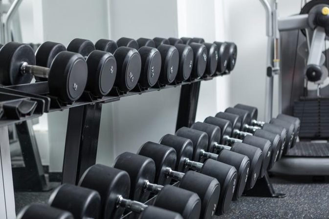

Working out has always been a great way for me to take my mind off things, and in a weird way relax. I go to the gym a few times a week and try to workout a specific part of my body at each trip. For examle, one day will be leg day, while the next would be chest. The gym I go to is only a block away from my house so its nice that I dont have to travel very far. I like going to the gym with a buddy or two because it is nice motivation. If you want to get into going to the gym I would suggest you first pay for a trial plan so you can get to know if you will want to continue. If you decide that you want to continue then during your first month or so go pretty light on everything because your body will not be used to the conditions. For extra assistance getting a personal trainer is not a bad idea because they will teach you how to use all of the equipment. But just so you know, working out does not just affect you when you are at the gym , but when you are at home as well. You will need to be a custom to eating healthier and making better choices otherwise going to the gym is useless.
In New York City there is the most high-tech gym. It takes advantage of smart equipment that enables you to create the perfect workout for you and your limits.
Music distracts people from pain and getting tired,it can make people feel happier, and even increase their endurance. While listening to music, people can run farther, bike longer and do many other activities better than usual without even noticing it.
A new gym called 24 hour fitness is a new, and greatly expanding gym company. They have already set up over 400 stores in places nation wide. You can get started online by joining a club.
In 2014 a Beijing SWAT member (Mao Weidong) set a world record by holding the plank position for a whole four hours and 26 minutes. This is pretty amazing considering that the average person cant even hold this postition for 2 minutes.
This is gym Equinox is said to be the best gym in the city of Chicago. Their locations are in Lincoln Park, Gold Coast, the Loop and Highland Park. People like it for the high-end feel,new classes,very nice clean locker rooms, and many other nice addtions that traditional gyms do not offer.
Guess
The
Color

Leave
CLick